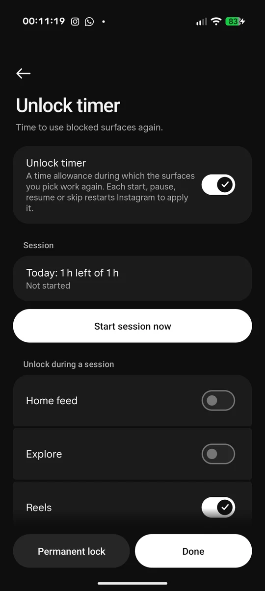

Instagram without Reels
Instagram without Reels
Instagram for Android without Reels, the endless feed, Explore or ads. Keep messaging, stories, and profiles.
downloads
Edited with ♥ by krishna000627-pixel
What changes?
Keep what matters, remove what distracts
Feed Posts
The endless home feed is hidden after its native request completes. No more doomscrolling.
Explore Tab
The suggested Explore content is hidden to prevent infinite browsing.
Reels Tab
Reels content is filtered after reception and the tab icon is hidden from the bottom bar. No infinite video loops.
Instants (+ in DMs)
The intrusive Instants "+" button at the bottom-right of the inbox is hidden. Toggleable.
Notes (above DMs)
The row of friends' text-bubble Notes at the top of the inbox is hidden. Toggleable.
Stories
View and post stories from the people you follow.
Direct Messages
Full messaging functionality including shared reels and posts.
Profile & Search
Access your profile, search for users, and get notifications.
Unlock timer
On builds that include Unlock timer, open FeurStagram settings → Content → Unlock timer to give selected blocked surfaces a time allowance that refills daily or weekly.
Start a session and use the draggable countdown to pause or resume. The selected surfaces are blocked again when you pause or run out of time.


Why Feurstagram?
For people who need Instagram DMs, stories and profiles, but do not want Reels, Explore, ads or the endless feed.
Real Android app
Feurstagram patches the real Instagram Android app instead of wrapping the mobile website in a WebView.
Open patches
Every patch is public, so you can inspect what is changed before installing anything.
Built for focus
It keeps the useful social features and removes the parts designed for endless scrolling.
Classic APK vs Clone APK
Choose the install type that matches how you want to use Instagram on your device.
Classic APK
Replaces the regular Instagram app by keeping Instagram's original package ID. Use this if you only want Feurstagram installed.
Clone APK
Uses a different package ID so it can be installed alongside the official Instagram app. Use this if you want both apps on the same device.
Safety and trust
Feurstagram does not collect, proxy, store, or transmit your Instagram credentials.
Build it yourself
You can patch the APK locally from source instead of trusting a prebuilt release artifact.
Unofficial project
Feurstagram is not affiliated with Instagram or Meta. It is a modified APK, so use it at your own risk.
Documented behavior
The README documents content response filtering. Native requests, including Instagram telemetry, remain enabled.
Guides
How to use Instagram without Reels, the feed or ads on Android.
Instagram without Reels
Instagram has no setting to turn off Reels. Five ways to use it without them, compared.
How to remove Reels on Android
Every option, from Instagram's own settings to removing the Reels tab.
Instagram without the feed
Keep only direct messages and stories.
DFInstagram alternative
A maintained, open-source distraction-free Instagram.
Feurstagram vs ScrollGuard vs WallHabit
Patched app or blocker app: which one fits you.
What the EU found
Instagram's addictive design under the Digital Services Act.